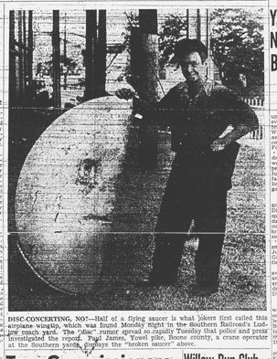

Metal Disk Offers Mystery
An official of the railroad, who declined to be named, said, however, that he believed the disk more likely had fallen from a passing freight car.
Disc 'Tip' is Wing Tip
Now Jokers Rig Up Yarn of Disc Here
|
PHOTOGRAPH ABOVE: Appeared on PAGE ONE of Kentucky Post, July 8, 1947. Text: Disc-concerting, no? Half of a flying saucer is what jokers first called this airplane wingtip, which was found Monday night in the Southern Railroad's Lulow coach yard. The "disc" rumor spread so rapidly Tuesday that police and press investigated the report. Paul James, Yowel pike, Boone county, a crane operator at the Southern yards, displays the "broken saucer" above.
RETURN
TO THE INDEX OF 1947 UFO CRASHES
Return
to Main Index Page | Unusual
Files | UFO Sighting Database
Reports
and Articles | E-mail Comments or Questions